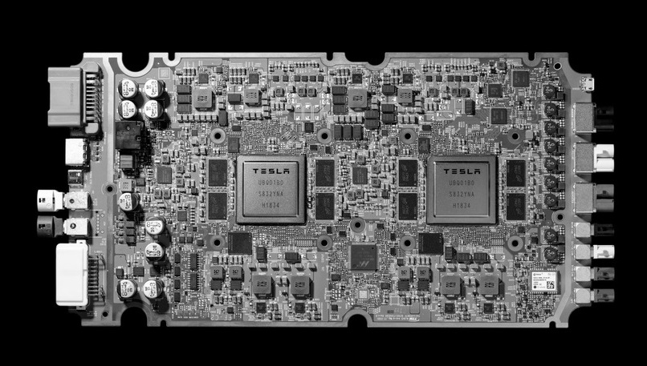
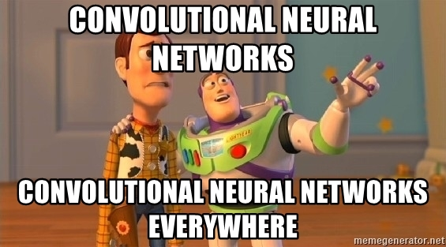

Tesla, 22 Nisan günü ilk kez yaptığı bir etkinlik ile karşımıza çıktı. Her yıl yapmak istediklerini söyledikleri etkinlik tamamen geliştirdikleri otonom sürüş sistemlerinin tanıtılması ve gelecek planlarının açıklanması amaçlıydı. Tesla, artık tam otonom sürüşe geçmeye hazırlandıklarını gösterdi. Hem donanım hem de yazılım alanında heyecan verici gelişmeler açıklandı.
Tesla’nın Yeni Bilgisayarı
2019’dan önce Tesla’nın araçlarda NVIDIA tarafından geliştirilmiş “Drive AGX” bilgisayarını kullanıyordu. Ancak anlaşılan, Steve Jobs misali yazılım ve donanımı birlikte geliştirmeden bu işin yapılamayacağını gördüler. Otonom Gününde ilk iş kendi ürettikleri bilgisayarı tanıttılar.
 Fotoğrafın kaynağı için tıklayın.{kind=link}
Tesla, tartışmalı bir şekilde en iyi otonom sürüş çiplerini geliştirdiklerini söylüyor. En iyi mi bilinmez ama Tesla için işe yarayacağı kesin. Saniyede 2300 görüntü karesini işleyebilen ve içinde birbirinden ayrı iki bilgisayar barındıran sistem Tesla’nın 8 kamerasından ve sensörlerinden gelen veriyi işleyerek otonom olarak aracı yönlendirebiliyor. Sistem içinde bir Sinir Ağı İşlemcisi (Neural Network processor) içeriyor. Yapay zeka için özel tasarlanmış bu işlemci matris, aktivasyon vb. fonksiyonları daha hızlı çalıştırabiliyor. Bu özelliğiyle Google’ın Yapay Zeka Donanımı stratejisi ile benzerlik gösteriyor. Google’ın TPU’ları (Tensor işlem Birimi / Tensor Processing Unit) benzer şekilde Tensorflow’un en çok kullanılan işlemlerini olabilecek en alt seviyede yapıyor, bu şekilde çok hızlı çalışıyor. Ancak bu stratejinin Tesla için daha işe yarar olabileceğini düşünüyorum. Tesla’nın Derin Öğrenme tarafında kullandığı işlem çeşitliliği çok daha az. Google dünyada yapay zeka geliştiren herkes için genel bir ürün üretiyor. Tesla ise yalnızca kendileri programlayacakları bir bilgisayar geliştiriyor.
Gerçek Dünya’dan Veri Toplamanın Gücü
Yapay Zeka’nın en büyük zorluklarından biri çok fazla veriye ihtiyaç duyması. Bazı şirketler milyarlarca kilometrelik sürüş verisini simülasyonlarla üretebileceklerini savunsa da Tesla bu yöntemi doğru bulmuyor. Aslında bunun nedeni simülasyonların asla gerçek dünyayı yeterince taklit edemeyeceği düşüncesi. Gerçek dünya çok tuhaf olabilecek, tabiri caizse karmakarışık bir yer. Simülasyonunu üretmeyi bırakın, aklınıza bile gelmeyecek koşullarla karşılaşılabiliyor. Tesla ise kimsenin sahip olmadığı bir güce sahip. Bugün kullanımda diğer tüm otonom şirketlerinin toplamından daha fazla aracı var. Bu filo ile sürekli gerçek dünya verisi topluyor ve bu sayede direkt olarak gerçekte karşılacağı görüntüler yapay zekanın eğitiminde kullanılıyor. Evet, diğerlerinin milyarlarca kilometrelik verisi varken, Tesla’nın “sadece” milyonlarca kilometrelik verisi var. Ama daha iyi verisi var. Kendileri de verinin fazlalığı kadar niteliğinin de önemli olduğunu söylüyor.
 Resmin kaynağı için tıklayın.{kind=link}
Sunumdan akıllarda kalan bir başka konu ise FSD altyapısının çok büyük bir kısmının derin öğrenmeden oluşması. Derin öğrenme çok yeni bir konu olmasına rağmen bilgisayarla görü için en iyi yöntem olarak görülüyor. Tesla ise bunu gösteren en iyi örneklerden biri. Bu iş nasıl yapılır sorusunun da karşılığı olabilecek bir şirket. Büyük veriye sahipler. Hem YZ eğitimi hem de kullanımı için güçlü bilgisayarları var. Ve tabiki çok iyi bir yapay zeka geliştirici ekipleri var. Sürekli olarak gelişen bir yapay zeka sistemi ürettiler ve üretmeye devam ediyorlar. Otonom aracınız sürekli yeni yetenekler kazanıyor. Keskin virajı alamıyor ve size mi devrediyor? Bir gece gelen bir güncellemeyi indiriyor ve artık alabilir duruma geliyor. Yani aracınızı satın aldıktan sonra da sizin için geliştirmeye devam ediyorlar. Bence harika bir özellik.
Otonom Taksiler
Elon Musk Twitter’dan duyurduğunda şaka yapıyor sanmıştım.
Gerçekten siz gece uyurken aracınız taksicilik yapsın para kazansın dediler. Tesla araçları içinde insan olmadan gidebilecek hale gelince başlatacakları bu proje sayesinde beklenti hem araç sahibine ek gelir kaynağı olacağı, hem de taksi ücretlerinin çok düşeceği yönünde. Ancak henüz bir kaç tasarım fotoğrafı ve rastgele yazdık dedikleri bir kaç rakam haricinde hiç bir şey net değil.Sonuç olarak, Tesla otonom araçların günümüzün bir gerçeği olduğunu gösterdi. Bu teknoloji için uzun zaman boyunca “gelecekte böyle olacak” dedik. İşte beklediğimiz gelecek geldi! Bugün Tesla, Waymo, Nvidia ve ismini bilmediğim bir sürü şirket otonom araçlar üretiyor ve onları test etmeye, kullanıcıya sunmaya başladılar. Tabiki sürekli olarak iyileşecek bu teknoloji ile direksiyonu olmayan arabalar çok yakın!
Jp Valery'in Unsplash'de paylaştığı fotoğraf kullanıldı.